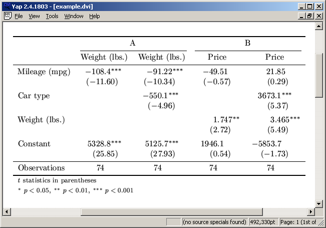

To report exponentiated coefficients (aka odds ratio in logistic regression, harzard ratio in the Cox model, incidence rate ratio, relative risk ratio), apply the eform option. Example:
. sysuse auto
(1978 Automobile Data)
. eststo: quietly logit foreign mpg
(est1 stored)
. eststo: quietly logit foreign mpg weight
(est2 stored)
. esttab, eform
--------------------------------------------
(1) (2)
foreign foreign
--------------------------------------------
mpg 1.173** 0.845
(3.04) (-1.83)
weight 0.996***
(-3.86)
--------------------------------------------
N 74 74
--------------------------------------------
Exponentiated coefficients; t statistics in parentheses
* p<0.05, ** p<0.01, *** p<0.001
. eststo clear
Note that eform also transforms the standard errors (and confidence intervals), as is illustrated bellow:
. sysuse auto
(1978 Automobile Data)
. quietly logit foreign mpg weight
. eststo raw
. eststo or
. esttab raw or, se mtitles eform(0 1)
--------------------------------------------
(1) (2)
raw or
--------------------------------------------
mpg -0.169 0.845
(0.0919) (0.0777)
weight -0.00391*** 0.996***
(0.00101) (0.00101)
_cons 13.71** 898396.7**
(4.519) (4059591.5)
--------------------------------------------
N 74 74
--------------------------------------------
Standard errors in parentheses
* p<0.05, ** p<0.01, *** p<0.001
. eststo clear
The example also illustrates that, optionally, eform can be applied to selected models only. If you are interested in applying other transformations, see estout's transform() option.
esttab and estout support Stata's mfx command for calculating marginal effects and elasticities. To make mfx's results available for tabulation it is essential that the model is stored after applying mfx. In esttab or estout then use the margin option to display the marginal effects. Example:
. sysuse auto
(1978 Automobile Data)
. generate reprec = (rep78 > 3) if rep78<.
(5 missing values generated)
. eststo raw: logit foreign mpg reprec
Iteration 0: log likelihood = -42.400729
Iteration 1: log likelihood = -28.036843
Iteration 2: log likelihood = -27.117187
Iteration 3: log likelihood = -27.07727
Iteration 4: log likelihood = -27.07712
Logistic regression Number of obs = 69
LR chi2(2) = 30.65
Prob > chi2 = 0.0000
Log likelihood = -27.07712 Pseudo R2 = 0.3614
------------------------------------------------------------------------------
foreign | Coef. Std. Err. z P>|z| [95% Conf. Interval]
-------------+----------------------------------------------------------------
mpg | .1401865 .0653246 2.15 0.032 .0121527 .2682203
reprec | 2.649856 .7380623 3.59 0.000 1.203281 4.096432
_cons | -5.370321 1.519268 -3.53 0.000 -8.348032 -2.392611
------------------------------------------------------------------------------
. eststo mfx: mfx
Marginal effects after logit
y = Pr(foreign) (predict)
= .21890427
------------------------------------------------------------------------------
variable | dy/dx Std. Err. z P>|z| [ 95% C.I. ] X
---------+--------------------------------------------------------------------
mpg | .0239698 .0121 1.98 0.048 .00026 .04768 21.2899
reprec*| .4813761 .11305 4.26 0.000 .25981 .702943 .42029
------------------------------------------------------------------------------
(*) dy/dx is for discrete change of dummy variable from 0 to 1
. esttab, se margin mtitles
--------------------------------------------
(1) (2)
raw mfx
--------------------------------------------
mpg 0.140* 0.0240*
(0.0653) (0.0121)
reprec (d) 2.650*** 0.481***
(0.738) (0.113)
--------------------------------------------
N 69 69
--------------------------------------------
Marginal effects; Standard errors in parentheses
(d) for discrete change of dummy variable from 0 to 1
* p<0.05, ** p<0.01, *** p<0.001
. eststo clear
The default in esttab or estout is to arrange the different equations of multiple-equation models in vertical order, as in:
. sysuse auto
(1978 Automobile Data)
. quietly heckman price weight, select(foreign = weight mpg) twostep
. esttab, wide
-----------------------------------------
(1)
price
-----------------------------------------
price
weight 5.284*** (5.89)
_cons -5925.0*** (-3.50)
-----------------------------------------
foreign
weight -0.00234*** (-4.13)
mpg -0.104* (-2.02)
_cons 8.275** (3.24)
-----------------------------------------
mills
lambda 104.9 (0.12)
-----------------------------------------
N 74
-----------------------------------------
t statistics in parentheses
* p<0.05, ** p<0.01, *** p<0.001
However, for models such as mlogit or sureg it is sometimes sensible to arrange the equations horizontally, which can be achieved through the use of the unstack option. Example:
. sysuse auto
(1978 Automobile Data)
. sureg (price foreign weight length) (mpg displ = foreign weight)
Seemingly unrelated regression
----------------------------------------------------------------------
Equation Obs Parms RMSE "R-sq" chi2 P
----------------------------------------------------------------------
price 74 3 1967.769 0.5488 89.74 0.0000
mpg 74 2 3.337283 0.6627 145.39 0.0000
displacement 74 2 39.60002 0.8115 318.62 0.0000
----------------------------------------------------------------------
------------------------------------------------------------------------------
| Coef. Std. Err. z P>|z| [95% Conf. Interval]
-------------+----------------------------------------------------------------
price |
foreign | 3575.26 621.7961 5.75 0.000 2356.562 4793.958
weight | 5.691462 .9205043 6.18 0.000 3.887307 7.495618
length | -88.27114 31.4167 -2.81 0.005 -149.8467 -26.69554
_cons | 4506.212 3588.044 1.26 0.209 -2526.225 11538.65
-------------+----------------------------------------------------------------
mpg |
foreign | -1.650029 1.053958 -1.57 0.117 -3.715748 .4156902
weight | -.0065879 .0006241 -10.56 0.000 -.007811 -.0053647
_cons | 41.6797 2.121197 19.65 0.000 37.52223 45.83717
-------------+----------------------------------------------------------------
displacement |
foreign | -25.6127 12.50621 -2.05 0.041 -50.12441 -1.100984
weight | .0967549 .0074051 13.07 0.000 .0822411 .1112686
_cons | -87.23548 25.17001 -3.47 0.001 -136.5678 -37.90317
------------------------------------------------------------------------------
. esttab, unstack scalars(r2 chi2 p) noobs nomtitle
------------------------------------------------------------
(1)
price mpg displacement
------------------------------------------------------------
foreign 3575.3*** -1.650 -25.61*
(5.75) (-1.57) (-2.05)
weight 5.691*** -0.00659*** 0.0968***
(6.18) (-10.56) (13.07)
length -88.27**
(-2.81)
_cons 4506.2 41.68*** -87.24***
(1.26) (19.65) (-3.47)
------------------------------------------------------------
r2 0.549 0.663 0.812
chi2 89.74 145.4 318.6
p 2.50e-19 2.68e-32 6.50e-70
------------------------------------------------------------
t statistics in parentheses
* p<0.05, ** p<0.01, *** p<0.001
Tables containing the signs of the coefficients, "significance stars", or "significant signs" (i.e. the signs of the coefficient where each sing is repeated according to significance level) can be produced as follows:
. sysuse auto
(1978 Automobile Data)
. eststo: regress price mpg foreign
Source | SS df MS Number of obs = 74
-------------+------------------------------ F( 2, 71) = 14.07
Model | 180261702 2 90130850.8 Prob > F = 0.0000
Residual | 454803695 71 6405685.84 R-squared = 0.2838
-------------+------------------------------ Adj R-squared = 0.2637
Total | 635065396 73 8699525.97 Root MSE = 2530.9
------------------------------------------------------------------------------
price | Coef. Std. Err. t P>|t| [95% Conf. Interval]
-------------+----------------------------------------------------------------
mpg | -294.1955 55.69172 -5.28 0.000 -405.2417 -183.1494
foreign | 1767.292 700.158 2.52 0.014 371.2169 3163.368
_cons | 11905.42 1158.634 10.28 0.000 9595.164 14215.67
------------------------------------------------------------------------------
(est1 stored)
. eststo: regress price mpg foreign weight
Source | SS df MS Number of obs = 74
-------------+------------------------------ F( 3, 70) = 23.29
Model | 317252881 3 105750960 Prob > F = 0.0000
Residual | 317812515 70 4540178.78 R-squared = 0.4996
-------------+------------------------------ Adj R-squared = 0.4781
Total | 635065396 73 8699525.97 Root MSE = 2130.8
------------------------------------------------------------------------------
price | Coef. Std. Err. t P>|t| [95% Conf. Interval]
-------------+----------------------------------------------------------------
mpg | 21.8536 74.22114 0.29 0.769 -126.1758 169.883
foreign | 3673.06 683.9783 5.37 0.000 2308.909 5037.212
weight | 3.464706 .630749 5.49 0.000 2.206717 4.722695
_cons | -5853.696 3376.987 -1.73 0.087 -12588.88 881.4934
------------------------------------------------------------------------------
(est2 stored)
. esttab, cells(_sign) nogap
--------------------------------------
(1) (2)
price price
_sign _sign
--------------------------------------
mpg - +
foreign + +
weight +
_cons + -
--------------------------------------
N 74 74
--------------------------------------
. esttab, cells(_star) nogap ///
> starlevels(n.s. 1 * 0.05 ** 0.01)
--------------------------------------
(1) (2)
price price
_star _star
--------------------------------------
mpg ** n.s.
foreign * **
weight **
_cons ** n.s.
--------------------------------------
N 74 74
--------------------------------------
. esttab, cells(_sigsign) nogap ///
> starlevels("+/-" 1 "++/--" 0.05 "+++/---" 0.01)
--------------------------------------
(1) (2)
price price
_sigsign _sigsign
--------------------------------------
mpg --- +
foreign ++ +++
weight +++
_cons +++ -
--------------------------------------
N 74 74
--------------------------------------
. eststo clear
Use the labcol2() option to add a column indicating the expected directions of effects according to theory:
. sysuse auto
(1978 Automobile Data)
. quietly regress price mpg foreign weight displ
. esttab, labcol2(+ ? + -, title("" Hypothesis))
-----------------------------------------
(1)
Hypothesis price
-----------------------------------------
mpg + 19.08
(0.26)
foreign ? 3930.2***
(5.67)
weight + 2.458**
(2.82)
displacement - 10.22
(1.65)
_cons -4846.8
(-1.43)
-----------------------------------------
N 74
-----------------------------------------
t statistics in parentheses
* p<0.05, ** p<0.01, *** p<0.001
To save space full output is sometimes suppressed for certain control variables and it is only indicated whether the model contains the variables or not. The indicate() in estout supports the construction of such tables:
. sysuse auto
(1978 Automobile Data)
. eststo: quietly regress price mpg foreign
(est1 stored)
. eststo: xi: quietly regress price mpg foreign i.rep78
i.rep78 _Irep78_1-5 (naturally coded; _Irep78_1 omitted)
(est2 stored)
. esttab, indicate(rep dummies = _Irep78*)
--------------------------------------------
(1) (2)
price price
--------------------------------------------
mpg -294.2*** -299.6***
(-5.28) (-4.73)
foreign 1767.3* 1102.3
(2.52) (1.22)
_cons 11905.4*** 10856.2***
(10.28) (4.79)
rep dummies No Yes
--------------------------------------------
N 74 69
--------------------------------------------
t statistics in parentheses
* p<0.05, ** p<0.01, *** p<0.001
. eststo clear
indicate() prints its information at the bottom of the main body of the table containing the coefficients. If you want to include the information in the table footer, then use the following approach:
. sysuse auto
(1978 Automobile Data)
. eststo: quietly regress price mpg foreign
(est1 stored)
. estadd local hasrep "No"
added macro:
e(hasrep) : "No"
. eststo: xi: quietly regress price mpg foreign i.rep78
i.rep78 _Irep78_1-5 (naturally coded; _Irep78_1 omitted)
(est2 stored)
. estadd local hasrep "Yes"
added macro:
e(hasrep) : "Yes"
. esttab, drop(_Irep78*) scalars("hasrep rep dummies")
--------------------------------------------
(1) (2)
price price
--------------------------------------------
mpg -294.2*** -299.6***
(-5.28) (-4.73)
foreign 1767.3* 1102.3
(2.52) (1.22)
_cons 11905.4*** 10856.2***
(10.28) (4.79)
--------------------------------------------
N 74 69
rep dummies No Yes
--------------------------------------------
t statistics in parentheses
* p<0.05, ** p<0.01, *** p<0.001
. eststo clear
Use the refcat() option to add a table row containing the (omitted) reference category of a categorical variable. Example:
. sysuse cancer
(Patient Survival in Drug Trial)
. stset studytime, failure(died)
failure event: died != 0 & died < .
obs. time interval: (0, studytime]
exit on or before: failure
------------------------------------------------------------------------------
48 total obs.
0 exclusions
------------------------------------------------------------------------------
48 obs. remaining, representing
31 failures in single record/single failure data
744 total analysis time at risk, at risk from t = 0
earliest observed entry t = 0
last observed exit t = 39
. xi: stcox age i.drug, nolog
i.drug _Idrug_1-3 (naturally coded; _Idrug_1 omitted)
failure _d: died
analysis time _t: studytime
Cox regression -- Breslow method for ties
No. of subjects = 48 Number of obs = 48
No. of failures = 31
Time at risk = 744
LR chi2(3) = 36.52
Log likelihood = -81.652567 Prob > chi2 = 0.0000
------------------------------------------------------------------------------
_t | Haz. Ratio Std. Err. z P>|z| [95% Conf. Interval]
-------------+----------------------------------------------------------------
age | 1.118334 .0409074 3.06 0.002 1.040963 1.201455
_Idrug_2 | .1805839 .0892742 -3.46 0.001 .0685292 .4758636
_Idrug_3 | .0520066 .034103 -4.51 0.000 .0143843 .1880305
------------------------------------------------------------------------------
. lab var _Idrug_2 "Tadalafil"
. lab var _Idrug_3 "Sildenafil"
. esttab, eform wide label nostar refcat(_Idrug_2 "Placebo")
----------------------------------------------
(1)
_t
----------------------------------------------
Patient's age at s.. 1.118 (3.06)
Placebo ref.
Tadalafil 0.181 (-3.46)
Sildenafil 0.0520 (-4.51)
----------------------------------------------
Observations 48
----------------------------------------------
Exponentiated coefficients; t statistics in parentheses
. esttab, eform wide label nostar refcat(_Idrug_2 "Placebo", label(1))
----------------------------------------------
(1)
_t
----------------------------------------------
Patient's age at s.. 1.118 (3.06)
Placebo 1
Tadalafil 0.181 (-3.46)
Sildenafil 0.0520 (-4.51)
----------------------------------------------
Observations 48
----------------------------------------------
Exponentiated coefficients; t statistics in parentheses
The refcat() option is designed to include information on the (omitted) reference category of a categorical variable (see above), but it can also be used to include extra rows in the table containing subtitles or other information. Example:
. sysuse auto
(1978 Automobile Data)
. regress price weight mpg turn foreign
Source | SS df MS Number of obs = 74
-------------+------------------------------ F( 4, 69) = 19.23
Model | 334771309 4 83692827.3 Prob > F = 0.0000
Residual | 300294087 69 4352088.22 R-squared = 0.5271
-------------+------------------------------ Adj R-squared = 0.4997
Total | 635065396 73 8699525.97 Root MSE = 2086.2
------------------------------------------------------------------------------
price | Coef. Std. Err. t P>|t| [95% Conf. Interval]
-------------+----------------------------------------------------------------
weight | 4.284532 .7404967 5.79 0.000 2.807282 5.761783
mpg | -.4660076 73.51407 -0.01 0.995 -147.1226 146.1905
turn | -229.2059 114.2423 -2.01 0.049 -457.1131 -1.298676
foreign | 3221.415 706.4847 4.56 0.000 1812.017 4630.813
_cons | 1368.197 4887.597 0.28 0.780 -8382.292 11118.69
------------------------------------------------------------------------------
. foreach v of varlist weight mpg turn foreign {
2. label variable `v' `"- `: variable label `v''"'
3. }
. esttab, refcat(weight "Main effects:" turn "Controls:", nolabel) wide label
-------------------------------------------------
(1)
Price
-------------------------------------------------
Main effects:
- Weight (lbs.) 4.285*** (5.79)
- Mileage (mpg) -0.466 (-0.01)
Controls:
- Turn Circle (ft.) -229.2* (-2.01)
- Car type 3221.4*** (4.56)
Constant 1368.2 (0.28)
-------------------------------------------------
Observations 74
-------------------------------------------------
t statistics in parentheses
* p<0.05, ** p<0.01, *** p<0.001
Rename coefficients using the rename() option before matching the models and equations to merge different coefficients into the same table row. Example:
. sysuse auto
(1978 Automobile Data)
. set seed 123
. generate altmpg = invnorm(uniform())
. eststo: quietly regress price weight mpg
(est1 stored)
. eststo: quietly regress price weight altmpg
(est2 stored)
. esttab
--------------------------------------------
(1) (2)
price price
--------------------------------------------
weight 1.747** 2.037***
(2.72) (5.36)
mpg -49.51
(-0.57)
altmpg -73.94
(-0.29)
_cons 1946.1 6.433
(0.54) (0.01)
--------------------------------------------
N 74 74
--------------------------------------------
t statistics in parentheses
* p<0.05, ** p<0.01, *** p<0.001
. esttab, rename(altmpg mpg)
--------------------------------------------
(1) (2)
price price
--------------------------------------------
weight 1.747** 2.037***
(2.72) (5.36)
mpg -49.51 -73.94
(-0.57) (-0.29)
_cons 1946.1 6.433
(0.54) (0.01)
--------------------------------------------
N 74 74
--------------------------------------------
t statistics in parentheses
* p<0.05, ** p<0.01, *** p<0.001
. eststo clear
If you want to produce a table that only contains the summary statistics of the models, but no coefficients, add cells(none) to the command:
. sysuse auto
(1978 Automobile Data)
. eststo: quietly regress price weight mpg
(est1 stored)
. eststo: quietly regress price weight mpg foreign
(est2 stored)
. esttab, cells(none) scalars(rank r2 r2_a bic aic) nomtitles
--------------------------------------
(1) (2)
--------------------------------------
N 74 74
rank 3 4
r2 0.293 0.500
r2_a 0.273 0.478
bic 1378.6 1357.4
aic 1371.7 1348.2
--------------------------------------
. eststo clear
The estadd's lrtest subcommand may be used to add results from likelihood-ratio tests as follows:
. sysuse auto
(1978 Automobile Data)
. eststo A: quietly logit foreign weight
. eststo B: quietly logit foreign weight mpg price
. estadd lrtest A
Likelihood-ratio test LR chi2(2) = 23.78
(Assumption: A nested in .) Prob > chi2 = 0.0000
added scalars:
e(lrtest_p) = 6.844e-06
e(lrtest_chi2) = 23.784217
e(lrtest_df) = 2
. esttab, scalars(lrtest_chi2 lrtest_df lrtest_p)
--------------------------------------------
(1) (2)
foreign foreign
--------------------------------------------
weight -0.00259*** -0.00685***
(-4.25) (-3.43)
mpg -0.121
(-1.27)
price 0.000926**
(3.01)
_cons 6.283*** 14.42**
(3.92) (2.66)
--------------------------------------------
N 74 74
lrtest_chi2 23.78
lrtest_df 2
lrtest_p 0.00000684
--------------------------------------------
t statistics in parentheses
* p<0.05, ** p<0.01, *** p<0.001
. eststo clear
The default in estout and esttab is to print the scalar summary statistics in the table footer in separate rows beneath one another (in each model's first column). Use the layout() suboption in the stats() option to rearrange the statistics. The option allows you to place the statistics in separate columns beside one another or also to combine multiple statistics in one table cell (see below). Here is an example:
. sysuse auto
(1978 Automobile Data)
. eststo: quietly regress price weight
(est1 stored)
. eststo: quietly regress price weight foreign
(est2 stored)
. esttab, p wide nopar label ///
> stats(F p N, layout("@ @" @) fmt(a3 3 a3) ///
> labels("F statistic" "Observations"))
------------------------------------------------------------------------------
(1) (2)
Price Price
------------------------------------------------------------------------------
Weight (lbs.) 2.044*** 0.000 3.321*** 0.000
Car type 3637.0*** 0.000
Constant -6.707 0.995 -4942.8*** 0.000
------------------------------------------------------------------------------
F statistic 29.42 0.000 35.35 0.000
Observations 74 74
------------------------------------------------------------------------------
p-values in second column
* p<0.05, ** p<0.01, *** p<0.001
. eststo clear
In the layout() suboption, the "@" character is used as a placeholder for the statistics, one after another. Statistics to be printed in the same row have to be enclosed in quotes.
The syntax for combining multiple summary statistics in one table cell is a bit clumsy, as is illustrated in the following example. The cell definition has to be enclosed in double quotes in the example because it contains a blank, and a set of compound double quotes is needed to mark off the row definition.
. sysuse auto
(1978 Automobile Data)
. eststo: quietly logit foreign weight mpg
(est1 stored)
. eststo: quietly logit foreign weight mpg turn displ
(est2 stored)
. esttab, stats(chi2 df_m r2_p N, layout(`""@ (@)""' @ @))
--------------------------------------------
(1) (2)
foreign foreign
--------------------------------------------
weight -0.00391*** 0.00239
(-3.86) (0.99)
mpg -0.169 -0.196*
(-1.83) (-2.07)
turn -0.502*
(-2.28)
displacement -0.0769*
(-2.06)
_cons 13.71** 26.95**
(3.03) (3.00)
--------------------------------------------
chi2 (df_m) 35.72 (2) 55.82 (4)
r2_p 0.397 0.620
N 74 74
--------------------------------------------
t statistics in parentheses
* p<0.05, ** p<0.01, *** p<0.001
. eststo clear
Note that in this example the layout definition could be simplified to layout(`""@ (@)""') without changing the result.
The factor command does not return e(b) and e(V), which makes tabulation less obvious. For example, the factor loadings are returned in matrix e(L) and the unique variances are returned in e(Psi):
. webuse bg2
(Physician-cost data)
. factor bg2cost1-bg2cost6
(obs=568)
Factor analysis/correlation Number of obs = 568
Method: principal factors Retained factors = 3
Rotation: (unrotated) Number of params = 15
--------------------------------------------------------------------------
Factor | Eigenvalue Difference Proportion Cumulative
-------------+------------------------------------------------------------
Factor1 | 0.85389 0.31282 1.0310 1.0310
Factor2 | 0.54107 0.51786 0.6533 1.6844
Factor3 | 0.02321 0.17288 0.0280 1.7124
Factor4 | -0.14967 0.03951 -0.1807 1.5317
Factor5 | -0.18918 0.06197 -0.2284 1.3033
Factor6 | -0.25115 . -0.3033 1.0000
--------------------------------------------------------------------------
LR test: independent vs. saturated: chi2(15) = 269.07 Prob>chi2 = 0.0000
Factor loadings (pattern matrix) and unique variances
-----------------------------------------------------------
Variable | Factor1 Factor2 Factor3 | Uniqueness
-------------+------------------------------+--------------
bg2cost1 | 0.2470 0.3670 -0.0446 | 0.8023
bg2cost2 | -0.3374 0.3321 -0.0772 | 0.7699
bg2cost3 | -0.3764 0.3756 0.0204 | 0.7169
bg2cost4 | -0.3221 0.1942 0.1034 | 0.8479
bg2cost5 | 0.4550 0.2479 0.0641 | 0.7274
bg2cost6 | 0.4760 0.2364 -0.0068 | 0.7175
-----------------------------------------------------------
. ereturn list
scalars:
e(f) = 3
e(N) = 568
e(df_m) = 15
e(df_r) = 0
e(chi2_i) = 269.0736870812582
e(df_i) = 15
e(p_i) = 1.43900835150e-48
e(evsum) = .8281790835746108
macros:
e(cmdline) : "factor bg2cost1-bg2cost6"
e(cmd) : "factor"
e(properties) : "nob noV eigen"
e(title) : "Factor analysis"
e(predict) : "factor_p"
e(estat_cmd) : "factor_estat"
e(rotate_cmd) : "factor_rotate"
e(mtitle) : "principal factors"
e(method) : "pf"
matrices:
e(sds) : 1 x 6
e(means) : 1 x 6
e(C) : 6 x 6
e(Phi) : 3 x 3
e(L) : 6 x 3
e(Psi) : 1 x 6
e(Ev) : 1 x 6
functions:
e(sample)
. matrix list e(L)
e(L)[6,3]
Factor1 Factor2 Factor3
bg2cost1 .24704957 .36703122 -.04457883
bg2cost2 -.33741222 .33210838 -.07721559
bg2cost3 -.37640773 .3755668 .02035389
bg2cost4 -.32206954 .1941843 .10341942
bg2cost5 .45501598 .24785063 .06407803
bg2cost6 .47598434 .23638092 -.0067801
. matrix list e(Psi)
e(Psi)[1,6]
bg2cost1 bg2cost2 bg2cost3 bg2cost4 bg2cost5 bg2cost6
Uniqueness .80226732 .76989477 .71685252 .84786809 .72742453 .717517
The simplest way to tabulate the factor loadings is to type:
. esttab e(L)
---------------------------------------------------
e(L)
Factor1 Factor2 Factor3
---------------------------------------------------
bg2cost1 .2470496 .3670312 -.0445788
bg2cost2 -.3374122 .3321084 -.0772156
bg2cost3 -.3764077 .3755668 .0203539
bg2cost4 -.3220695 .1941843 .1034194
bg2cost5 .455016 .2478506 .064078
bg2cost6 .4759843 .2363809 -.0067801
---------------------------------------------------
Reproducing the factor loadings table including the unique variances is more involved. The single factors in e(L) have to be addressed individually. For example, type:
. esttab, ///
> cells("L[1](transpose) L[2](transpose) L[3](transpose) Psi") ///
> nogap noobs nonumber nomtitle
----------------------------------------------------------------
L[1] L[2] L[3] Psi
----------------------------------------------------------------
bg2cost1 .2470496 .3670312 -.0445788 .8022673
bg2cost2 -.3374122 .3321084 -.0772156 .7698948
bg2cost3 -.3764077 .3755668 .0203539 .7168525
bg2cost4 -.3220695 .1941843 .1034194 .8478681
bg2cost5 .455016 .2478506 .064078 .7274245
bg2cost6 .4759843 .2363809 -.0067801 .717517
----------------------------------------------------------------
The transpose suboption is required since the factors are in the columns of e(L) and, by default, e()-matrices are read row-wise (transpose can be abbreviated to t). Hence, L[#](transpose) refers to the #th column of e(L).
The label() suboption can be used to add labels, for example:
. esttab, ///
> cells("L[1](t label(Factor 1)) L[2](t) L[3](t) Psi") ///
> nogap noobs nonumber nomtitle
----------------------------------------------------------------
Factor 1 L[2] L[3] Psi
----------------------------------------------------------------
bg2cost1 .2470496 .3670312 -.0445788 .8022673
bg2cost2 -.3374122 .3321084 -.0772156 .7698948
bg2cost3 -.3764077 .3755668 .0203539 .7168525
bg2cost4 -.3220695 .1941843 .1034194 .8478681
bg2cost5 .455016 .2478506 .064078 .7274245
bg2cost6 .4759843 .2363809 -.0067801 .717517
----------------------------------------------------------------
Alternatively, you can also use syntax el[name], where name refers to the name of the row to be tabulated (or column if transpose is specified) and also sets the label:
. esttab, ///
> cells("L[Factor1](t) L[Factor2](t) L[Factor3](t) Psi[Uniqueness]") ///
> nogap noobs nonumber nomtitle
----------------------------------------------------------------
Factor1 Factor2 Factor3 Uniqueness
----------------------------------------------------------------
bg2cost1 .2470496 .3670312 -.0445788 .8022673
bg2cost2 -.3374122 .3321084 -.0772156 .7698948
bg2cost3 -.3764077 .3755668 .0203539 .7168525
bg2cost4 -.3220695 .1941843 .1034194 .8478681
bg2cost5 .455016 .2478506 .064078 .7274245
bg2cost6 .4759843 .2363809 -.0067801 .717517
----------------------------------------------------------------
Tables of ologit or oprobit look somewhat complicated in Stata 9 or newer since each cutoff is stored in its own equation. To clean out the table, specify eqlabels(none):
. sysuse auto
(1978 Automobile Data)
. ologit rep mpg foreign
Iteration 0: log likelihood = -93.692061
Iteration 1: log likelihood = -78.844995
Iteration 2: log likelihood = -78.106784
Iteration 3: log likelihood = -78.08927
Iteration 4: log likelihood = -78.089242
Ordered logistic regression Number of obs = 69
LR chi2(2) = 31.21
Prob > chi2 = 0.0000
Log likelihood = -78.089242 Pseudo R2 = 0.1665
------------------------------------------------------------------------------
rep78 | Coef. Std. Err. z P>|z| [95% Conf. Interval]
-------------+----------------------------------------------------------------
mpg | .0672774 .0494465 1.36 0.174 -.029636 .1641908
foreign | 2.599085 .6745627 3.85 0.000 1.276966 3.921204
-------------+----------------------------------------------------------------
/cut1 | -1.885212 1.175719 -4.189579 .4191555
/cut2 | -.0922328 .9934139 -2.039288 1.854823
/cut3 | 2.524538 1.021289 .5228488 4.526228
/cut4 | 4.580877 1.146847 2.333098 6.828657
------------------------------------------------------------------------------
. esttab, wide
-----------------------------------------
(1)
rep78
-----------------------------------------
rep78
mpg 0.0673 (1.36)
foreign 2.599*** (3.85)
-----------------------------------------
cut1
_cons -1.885 (-1.60)
-----------------------------------------
cut2
_cons -0.0922 (-0.09)
-----------------------------------------
cut3
_cons 2.525* (2.47)
-----------------------------------------
cut4
_cons 4.581*** (3.99)
-----------------------------------------
N 69
-----------------------------------------
t statistics in parentheses
* p<0.05, ** p<0.01, *** p<0.001
. esttab, wide eqlabels(none)
-----------------------------------------
(1)
rep78
-----------------------------------------
mpg 0.0673 (1.36)
foreign 2.599*** (3.85)
cut1 -1.885 (-1.60)
cut2 -0.0922 (-0.09)
cut3 2.525* (2.47)
cut4 4.581*** (3.99)
-----------------------------------------
N 69
-----------------------------------------
t statistics in parentheses
* p<0.05, ** p<0.01, *** p<0.001
To print a line between the main part of the table and the cutoffs, type:
. esttab, wide eqlabels(none) ///
> varlabels(,blist(cut1:_cons "{hline @width}{break}"))
-----------------------------------------
(1)
rep78
-----------------------------------------
mpg 0.0673 (1.36)
foreign 2.599*** (3.85)
-----------------------------------------
cut1 -1.885 (-1.60)
cut2 -0.0922 (-0.09)
cut3 2.525* (2.47)
cut4 4.581*** (3.99)
-----------------------------------------
N 69
-----------------------------------------
t statistics in parentheses
* p<0.05, ** p<0.01, *** p<0.001
Furthermore, to suppress significance stars and standard errors for the cutoffs, type:
. esttab, cells("b(fmt(a3) star) se(drop(cut*:))") ///
> stardrop(cut*:) eqlabels(none) ///
> varlabels(,blist(cut1:_cons "{hline @width}{break}"))
-----------------------------------------
(1)
rep78
b se
-----------------------------------------
mpg 0.0673 0.0494
foreign 2.599*** 0.675
-----------------------------------------
cut1 -1.885
cut2 -0.0922
cut3 2.525
cut4 4.581
-----------------------------------------
N 69
-----------------------------------------
To tabulate the marginal effects for all outcomes after mlogit it is necessary to store several variants of the model's estimates. Example:
. sysuse auto
(1978 Automobile Data)
. replace price = price / 1000
price was int now float
(74 real changes made)
. replace weight = weight / 1000
weight was int now float
(74 real changes made)
. quietly mlogit rep78 price mpg foreign if rep78>=3, nolog
. foreach o in 3 4 5 {
2. eststo, title(Outcome `o'): quietly mfx, predict(outcome(`o')) nose
3. }
(est1 stored)
(est2 stored)
(est3 stored)
. esttab, margin scalars(Xmfx_y) noobs not nostar nocons ///
> mtitles nonumbers keep(4:) eqlabels(none) collabels(none)
---------------------------------------------------
Outcome 3 Outcome 4 Outcome 5
---------------------------------------------------
price -0.00347 -0.0140 0.0175
mpg -0.0171 -0.00245 0.0195
foreign (d) -0.516 0.290 0.225
---------------------------------------------------
Xmfx_y 0.510 0.380 0.110
---------------------------------------------------
Marginal effects
(d) for discrete change of dummy variable from 0 to 1
. eststo clear
Things get involved if the marginal effects for the outcomes be printed beneath one another, because the model's representation in the e()-returns lacks an equation for the reference outcome. However, you can use estadd prchange with the adapt option to compute marginal effects and set up the model for tabulation. Example:
. sysuse auto
(1978 Automobile Data)
. replace price = price / 1000
price was int now float
(74 real changes made)
. replace weight = weight / 1000
weight was int now float
(74 real changes made)
. quietly mlogit rep78 price mpg foreign if rep78>=3, nolog
. estadd prchange, c(margefct) adapt
mlogit: Changes in Probabilities for rep78
price
Avg|Chg| 4 5 3
Min->Max .22632305 -.20621726 .33948457 -.13326731
-+1/2 .01165351 -.01400626 .01748028 -.003474
-+sd/2 .03369502 -.04037875 .05054252 -.01016378
MargEfct .01164741 -.01400459 .01747111 -.00346652
mpg
Avg|Chg| 4 5 3
Min->Max .55527355 -.27560695 .8329103 -.55730341
-+1/2 .01301373 -.0024623 .01952058 -.01705831
-+sd/2 .08165233 -.01687825 .12247847 -.10560027
MargEfct .0130051 -.00245415 .01950765 -.01705351
foreign
Avg|Chg| 4 5 3
0->1 .34368436 .29041834 .22510819 -.51552653
4 5 3
Pr(y|x) .38015294 .11008285 .50976419
price mpg foreign
x= 6.22385 21.5932 .355932
sd(x)= 2.88045 6.13109 .482905
added scalars:
e(predval4) = .38015294
e(predval5) = .11008285
e(predval3) = .50976419
e(delta) = 1
e(centered) = 1
added matrices:
e(dc) : 6 x 9 (main, Min->Max, 0->1, -+1/2, -+sd/2, Marg
> Efct)
e(pattern) : 1 x 9
e(X) : 4 x 3 (X, SD, Min, Max)
first row in e(dc) contains:
01 change for binary variables
margefct for continuous variables
Note: e(b) and e(V) modified - use for tabulation only
. esttab, main(dc) not nostar
-------------------------
(1)
rep78
-------------------------
3
price -0.00347
mpg -0.0171
foreign -0.516
-------------------------
4
price -0.0140
mpg -0.00245
foreign 0.290
-------------------------
5
price 0.0175
mpg 0.0195
foreign 0.225
-------------------------
N 59
-------------------------
dc coefficients
Variance parameters are returned by xtmixed as logarithms of standard deviations in e(b). To tabulate the parameters as standard deviations, back-transform them using the transform() option. Example:
. webuse pig
(Longitudinal analysis of pig weights)
. xtmixed weight week || id: week
Performing EM optimization:
Performing gradient-based optimization:
Iteration 0: log restricted-likelihood = -870.51473
Iteration 1: log restricted-likelihood = -870.51473
Computing standard errors:
Mixed-effects REML regression Number of obs = 432
Group variable: id Number of groups = 48
Obs per group: min = 9
avg = 9.0
max = 9
Wald chi2(1) = 4592.10
Log restricted-likelihood = -870.51473 Prob > chi2 = 0.0000
------------------------------------------------------------------------------
weight | Coef. Std. Err. z P>|z| [95% Conf. Interval]
-------------+----------------------------------------------------------------
week | 6.209896 .0916386 67.77 0.000 6.030287 6.389504
_cons | 19.35561 .4021142 48.13 0.000 18.56748 20.14374
------------------------------------------------------------------------------
------------------------------------------------------------------------------
Random-effects Parameters | Estimate Std. Err. [95% Conf. Interval]
-----------------------------+------------------------------------------------
id: Independent |
sd(week) | .6135471 .0673971 .4947035 .7609409
sd(_cons) | 2.630132 .302883 2.098719 3.296105
-----------------------------+------------------------------------------------
sd(Residual) | 1.26443 .0487971 1.172317 1.363781
------------------------------------------------------------------------------
LR test vs. linear regression: chi2(2) = 765.92 Prob > chi2 = 0.0000
Note: LR test is conservative and provided only for reference.
. esttab, se wide nostar transform(ln*: exp(@) exp(@))
--------------------------------------
(1)
weight
--------------------------------------
weight
week 6.210 (0.0916)
_cons 19.36 (0.402)
--------------------------------------
lns1_1_1
_cons 0.614 (0.0674)
--------------------------------------
lns1_1_2
_cons 2.630 (0.303)
--------------------------------------
lnsig_e
_cons 1.264 (0.0488)
--------------------------------------
N 432
--------------------------------------
Standard errors in parentheses
. esttab, se wide nostar transform(ln*: exp(@) exp(@)) ///
> eqlabels("" "sd(week)" "sd(_cons)" "sd(Residual)", none) ///
> varlabels(,elist(weight:_cons "{break}{hline @width}")) ///
> varwidth(13)
---------------------------------------
(1)
weight
---------------------------------------
week 6.210 (0.0916)
_cons 19.36 (0.402)
---------------------------------------
sd(week) 0.614 (0.0674)
sd(_cons) 2.630 (0.303)
sd(Residual) 1.264 (0.0488)
---------------------------------------
N 432
---------------------------------------
Standard errors in parentheses
(Note that in transform() you also have to include the function's first derivative, which is required for the standard errors. The example above might be confusing because the first derivative of exp(x) is simply exp(x). See below for examples where the two differ.)
Similarly, to display the parameters as variances, type:
. xtmixed, variance
Mixed-effects REML regression Number of obs = 432
Group variable: id Number of groups = 48
Obs per group: min = 9
avg = 9.0
max = 9
Wald chi2(1) = 4592.10
Log restricted-likelihood = -870.51473 Prob > chi2 = 0.0000
------------------------------------------------------------------------------
weight | Coef. Std. Err. z P>|z| [95% Conf. Interval]
-------------+----------------------------------------------------------------
week | 6.209896 .0916386 67.77 0.000 6.030287 6.389504
_cons | 19.35561 .4021142 48.13 0.000 18.56748 20.14374
------------------------------------------------------------------------------
------------------------------------------------------------------------------
Random-effects Parameters | Estimate Std. Err. [95% Conf. Interval]
-----------------------------+------------------------------------------------
id: Independent |
var(week) | .3764401 .0827025 .2447315 .579031
var(_cons) | 6.917597 1.593245 4.40462 10.86431
-----------------------------+------------------------------------------------
var(Residual) | 1.598784 .1234011 1.374328 1.859899
------------------------------------------------------------------------------
LR test vs. linear regression: chi2(2) = 765.92 Prob > chi2 = 0.0000
Note: LR test is conservative and provided only for reference.
. esttab, se wide nostar transform(ln*: exp(2*@) 2*exp(2*@)) ///
> eqlabels("" "var(week)" "var(_cons)" "var(Residual)", none) ///
> varlabels(,elist(weight:_cons "{break}{hline @width}")) ///
> varwidth(13)
---------------------------------------
(1)
weight
---------------------------------------
week 6.210 (0.0916)
_cons 19.36 (0.402)
---------------------------------------
var(week) 0.376 (0.0827)
var(_cons) 6.918 (1.593)
var(Residual) 1.599 (0.123)
---------------------------------------
N 432
---------------------------------------
Standard errors in parentheses
If the model also has covariance terms, these are returned as arc-hyperbolic tangents of correlations in e(b) and can be back-transformed to correlations using Stata's tanh() function. Example:
. xtmixed weight week || id: week, covariance(unstructured)
Performing EM optimization:
Performing gradient-based optimization:
Iteration 0: log restricted-likelihood = -870.43562
Iteration 1: log restricted-likelihood = -870.43562
Computing standard errors:
Mixed-effects REML regression Number of obs = 432
Group variable: id Number of groups = 48
Obs per group: min = 9
avg = 9.0
max = 9
Wald chi2(1) = 4552.31
Log restricted-likelihood = -870.43562 Prob > chi2 = 0.0000
------------------------------------------------------------------------------
weight | Coef. Std. Err. z P>|z| [95% Conf. Interval]
-------------+----------------------------------------------------------------
week | 6.209896 .0920382 67.47 0.000 6.029504 6.390287
_cons | 19.35561 .4038677 47.93 0.000 18.56405 20.14718
------------------------------------------------------------------------------
------------------------------------------------------------------------------
Random-effects Parameters | Estimate Std. Err. [95% Conf. Interval]
-----------------------------+------------------------------------------------
id: Unstructured |
sd(week) | .6164379 .0680541 .4964981 .7653519
sd(_cons) | 2.643192 .3057584 2.106996 3.315842
corr(week,_cons) | -.0634377 .158876 -.3593789 .2440973
-----------------------------+------------------------------------------------
sd(Residual) | 1.263657 .0487466 1.171638 1.362903
------------------------------------------------------------------------------
LR test vs. linear regression: chi2(3) = 766.07 Prob > chi2 = 0.0000
Note: LR test is conservative and provided only for reference.
. esttab, se wide nostar ///
> transform(ln*: exp(@) exp(@) at*: tanh(@) (1-tanh(@)^2)) ///
> eqlabels("" "sd(week)" "sd(_cons)" "corr(week,_cons)" "sd(Residual)", ///
> none) ///
> varlabels(,elist(weight:_cons "{break}{hline @width}")) ///
> varwidth(16)
------------------------------------------
(1)
weight
------------------------------------------
week 6.210 (0.0920)
_cons 19.36 (0.404)
------------------------------------------
sd(week) 0.616 (0.0681)
sd(_cons) 2.643 (0.306)
corr(week,_cons) -0.0634 (0.159)
sd(Residual) 1.264 (0.0487)
------------------------------------------
N 432
------------------------------------------
Standard errors in parentheses
Unfortunately, it is not possible for transform() to turn such correlations into covariances (requires multiplication by the standard deviations). However, you can use estadd to manually compute the terms in advance and add them in the footer of the table. Example:
. xtmixed, variance
Mixed-effects REML regression Number of obs = 432
Group variable: id Number of groups = 48
Obs per group: min = 9
avg = 9.0
max = 9
Wald chi2(1) = 4552.31
Log restricted-likelihood = -870.43562 Prob > chi2 = 0.0000
------------------------------------------------------------------------------
weight | Coef. Std. Err. z P>|z| [95% Conf. Interval]
-------------+----------------------------------------------------------------
week | 6.209896 .0920382 67.47 0.000 6.029504 6.390287
_cons | 19.35561 .4038677 47.93 0.000 18.56405 20.14718
------------------------------------------------------------------------------
------------------------------------------------------------------------------
Random-effects Parameters | Estimate Std. Err. [95% Conf. Interval]
-----------------------------+------------------------------------------------
id: Unstructured |
var(week) | .3799957 .0839023 .2465103 .5857635
var(_cons) | 6.986465 1.616357 4.439432 10.99481
cov(week,_cons) | -.1033632 .2627309 -.6183063 .41158
-----------------------------+------------------------------------------------
var(Residual) | 1.596829 .1231981 1.372736 1.857506
------------------------------------------------------------------------------
LR test vs. linear regression: chi2(3) = 766.07 Prob > chi2 = 0.0000
Note: LR test is conservative and provided only for reference.
. mat list e(b)
e(b)[1,6]
weight: weight: lns1_1_1: lns1_1_2: atr1_1_1_2:
week _cons _cons _cons _cons
y1 6.2098958 19.355613 -.48379761 .97198734 -.06352304
lnsig_e:
_cons
y1 .23401004
. estadd scalar v1 = exp(2*[lns1_1_1]_b[_cons])
added scalar:
e(v1) = .37999574
. estadd scalar v2 = exp(2*[lns1_1_2]_b[_cons])
added scalar:
e(v2) = 6.9864649
. estadd scalar cov = tanh([atr1_1_1_2]_b[_cons]) ///
> * exp([lns1_1_1]_b[_cons]) ///
> * exp([lns1_1_2]_b[_cons])
added scalar:
e(cov) = -.10336316
. estadd scalar v_e = exp(2*[lnsig_e]_b[_cons])
added scalar:
e(v_e) = 1.5968295
. esttab, se wide nostar keep(weight:) obslast ///
> scalars("v1 var(week)" "v2 var(_cons)" ///
> "cov cov(week,_cons)" "v_e var(Residual)") ///
> eqlabels(none) varwidth(15)
-----------------------------------------
(1)
weight
-----------------------------------------
week 6.210 (0.0920)
_cons 19.36 (0.404)
-----------------------------------------
var(week) 0.380
var(_cons) 6.986
cov(week,_cons) -0.103
var(Residual) 1.597
N 432
-----------------------------------------
Standard errors in parentheses
. sysuse auto
(1978 Automobile Data)
. eststo: quietly reg weight mpg
(est1 stored)
. eststo: quietly reg weight mpg foreign
(est2 stored)
. eststo: quietly reg price weight mpg
(est3 stored)
. eststo: quietly reg price weight mpg foreign
(est4 stored)
. esttab using example.tex, booktabs label ///
> mgroups(A B, pattern(1 0 1 0) ///
> prefix(\multicolumn{@span}{c}{) suffix(}) ///
> span erepeat(\cmidrule(lr){@span})) ///
> alignment(D{.}{.}{-1}) page(dcolumn) nonumber
(output written to example.tex)
. eststo clear
Result:

[estpost supersedes this example. See "Post summary statistics (summarize)" or "Post summary statistics (tabstat)" under "Examples for estpost".]
Research papers usually contain a table displaying the descriptive statistics for all variables in the analysis. The following example illustrates how such a table can be produced using estadd summ and esttab. Assume, your analysis uses price as the dependent variable and weight, mpg, and foreign as independent variables. To create a descriptives table including all four variables, type:
. sysuse auto
(1978 Automobile Data)
. generate y = uniform()
. quietly regress y price weight mpg foreign, noconstant
. estadd summ
added matrices:
e(sd) : 1 x 4
e(max) : 1 x 4
e(min) : 1 x 4
e(mean) : 1 x 4
. esttab, cells("mean sd min max") nogap nomtitle nonumber
----------------------------------------------------------------
mean sd min max
----------------------------------------------------------------
price 6165.257 2949.496 3291 15906
weight 3019.459 777.1936 1760 4840
mpg 21.2973 5.785503 12 41
foreign .2972973 .4601885 0 1
----------------------------------------------------------------
N 74
----------------------------------------------------------------
The trick is to generate a fake variable and regress it on all involved variables, including the dependent variable.
[estpost supersedes this example. See "Post summary statistics by subgroups (summarize)" or "Post summary statistics by subgroups (tabstat)" under "Examples for estpost".]
A table of descriptive statistics by subgroups can easily be produced using by and eststo:
. sysuse auto
(1978 Automobile Data)
. generate y = uniform()
. by foreign: eststo: quietly regress y price weight mpg, nocons
-------------------------------------------------------------------------------
-> Domestic
(est1 stored)
-------------------------------------------------------------------------------
-> Foreign
(est2 stored)
. estadd summ : *
. esttab, main(mean) aux(sd) label nodepvar nostar nonote
----------------------------------------------
(1) (2)
Domestic Foreign
----------------------------------------------
Price 6072.4 6384.7
(3097.1) (2621.9)
Weight (lbs.) 3317.1 2315.9
(695.4) (433.0)
Mileage (mpg) 19.83 24.77
(4.743) (6.611)
----------------------------------------------
Observations 52 22
----------------------------------------------
. eststo clear
[estpost supersedes this example. See "Post results from two-sample mean-comparison tests (ttest)" under "Examples for estpost".]
Basically anything can be tabulated by estout or esttab once it is posted in e(). Here is an example with t-tests:
. capt prog drop myttests
. *! version 1.0.0 14aug2007 Ben Jann
. program myttests, eclass
1. version 8
2. syntax varlist [if] [in], by(varname) [ * ]
3. marksample touse
4. markout `touse' `by'
5. tempname mu_1 mu_2 d d_se d_t d_p
6. foreach var of local varlist {
7. qui ttest `var' if `touse', by(`by') `options'
8. mat `mu_1' = nullmat(`mu_1'), r(mu_1)
9. mat `mu_2' = nullmat(`mu_2'), r(mu_2)
10. mat `d' = nullmat(`d' ), r(mu_1)-r(mu_2)
11. mat `d_se' = nullmat(`d_se'), r(se)
12. mat `d_t' = nullmat(`d_t' ), r(t)
13. mat `d_p' = nullmat(`d_p' ), r(p)
14. }
15. foreach mat in mu_1 mu_2 d d_se d_t d_p {
16. mat coln ``mat'' = `varlist'
17. }
18. tempname b V
19. mat `b' = `mu_1'*0
20. mat `V' = `b''*`b'
21. eret post `b' `V'
22. eret local cmd "myttests"
23. foreach mat in mu_1 mu_2 d d_se d_t d_p {
24. eret mat `mat' = ``mat''
25. }
26. end
. sysuse auto
(1978 Automobile Data)
. myttests price weight mpg, by(foreign)
. ereturn list
macros:
e(cmd) : "myttests"
e(properties) : "b V"
matrices:
e(b) : 1 x 3
e(V) : 3 x 3
e(d_p) : 1 x 3
e(d_t) : 1 x 3
e(d_se) : 1 x 3
e(d) : 1 x 3
e(mu_2) : 1 x 3
e(mu_1) : 1 x 3
. esttab, nomtitle nonumbers noobs ///
> cells("mu_1(fmt(a3)) mu_2 d(star pvalue(d_p))" ". . d_se(par)")
------------------------------------------------------
mu_1 mu_2 d/d_se
------------------------------------------------------
price 6072.4 6384.7 -312.3
(754.4)
weight 3317.1 2315.9 1001.2***
(160.3)
mpg 19.83 24.77 -4.946***
(1.362)
------------------------------------------------------
(An alternative approach would be to save three sets of estimates, one for each group, and one for the differences.)
[estpost supersedes this example. See "Post a one-way frequency table (tabulate)" and "Post a two-way frequency table (tabulate)" under "Examples for estpost".]
With a little programming you could even do frequency tables in estout. Here is an example for a one-way table:
. capt prog drop e_tabulate
. *! version 1.0.0 24sep2007 Ben Jann
. prog e_tabulate, eclass
1. version 8.2
2. syntax varname(numeric) [if] [in] [fw aw iw] [, noTOTal * ]
3. tempname count percent vals V
4. tab `varlist' `if' `in' [`weight'`exp'], matcell(`count') matrow(`vals
> ') `options'
5. local N = r(N)
6. mat `count' = `count''
7. forv r =1/`=rowsof(`vals')' {
8. local value: di `vals'[`r',1]
9. local label: label (`varlist') `value'
10. local values "`values' `value'"
11. local labels `"`labels' `value' `"`label'"'"'
12. }
13. if "`total'"=="" {
14. mat `count' = `count', `N'
15. local values "`values' total"
16. local labels `"`labels' total `"Total"'"'
17. }
18. mat colname `count' = `values'
19. mat `percent' = `count'/`N'*100
20. mat `V' = `count''*`count'*0
21. eret post `count' `V', depname(`varlist') obs(`N')
22. eret local cmd "e_tabulate"
23. eret local depvar "`varlist'"
24. eret local labels `"`labels'"'
25. eret mat percent = `percent'
26. end
. sysuse auto
(1978 Automobile Data)
. e_tabulate foreign
Car type | Freq. Percent Cum.
------------+-----------------------------------
Domestic | 52 70.27 70.27
Foreign | 22 29.73 100.00
------------+-----------------------------------
Total | 74 100.00
. ereturn list
scalars:
e(N) = 74
macros:
e(labels) : " 0 `"Domestic"' 1 `"Foreign"' total `"Total"'"
e(depvar) : "foreign"
e(cmd) : "e_tabulate"
e(properties) : "b V"
matrices:
e(b) : 1 x 3
e(V) : 3 x 3
e(percent) : 1 x 3
. mat list e(b)
e(b)[1,3]
0 1 total
y1 52 22 74
. mat list e(percent)
e(percent)[1,3]
0 1 total
c1 70.27027 29.72973 100
. esttab, cell("b percent") noobs nonumbers nomtitles ///
> collabels(Freq. Percent, lhs(`:var lab `e(depvar)'')) ///
> varlabels(`e(labels)', blist(total "{hline @width}{break}"))
--------------------------------------
Car type Freq. Percent
--------------------------------------
Domestic 52 70.27027
Foreign 22 29.72973
--------------------------------------
Total 74 100
--------------------------------------
To construct a twoway table, save the conditional distributions in the table columns as separate estimation sets. Example:
. bys foreign: eststo: e_tabulate rep
-------------------------------------------------------------------------------
-> Domestic
Repair |
Record 1978 | Freq. Percent Cum.
------------+-----------------------------------
1 | 2 4.17 4.17
2 | 8 16.67 20.83
3 | 27 56.25 77.08
4 | 9 18.75 95.83
5 | 2 4.17 100.00
------------+-----------------------------------
Total | 48 100.00
(est1 stored)
-------------------------------------------------------------------------------
-> Foreign
Repair |
Record 1978 | Freq. Percent Cum.
------------+-----------------------------------
3 | 3 14.29 14.29
4 | 9 42.86 57.14
5 | 9 42.86 100.00
------------+-----------------------------------
Total | 21 100.00
(est2 stored)
. esttab, main(percent 2) not nostar mtitles noobs nonote ///
> varlab(`e(labels)', blist(total "{hline @width}{break}"))
--------------------------------------
(1) (2)
Domestic Foreign
--------------------------------------
1 4.17
2 16.67
3 56.25 14.29
4 18.75 42.86
5 4.17 42.86
--------------------------------------
Total 100.00 100.00
--------------------------------------
. eststo clear
A Stata matrix can be tabulated in estout or esttab by typing matrix(matname) instead of providing a list of names of stored estimation sets. Example:
. matrix A = (11,12,13)\(21,22,23)\(31,32,33)\(41,42,43)
. esttab matrix(A)
---------------------------------------------------
A
c1 c2 c3
---------------------------------------------------
r1 11 12 13
r2 21 22 23
r3 31 32 33
r4 41 42 43
---------------------------------------------------
Numeric formats can be set by adding a fmt() suboption in the matrix() argument. Examples:
. esttab matrix(A, fmt(1 2 3))
---------------------------------------------------
A
c1 c2 c3
---------------------------------------------------
r1 11.0 12.00 13.000
r2 21.0 22.00 23.000
r3 31.0 32.00 33.000
r4 41.0 42.00 43.000
---------------------------------------------------
. esttab matrix(A, fmt("1 2 3 4" "4 3 2 1"))
---------------------------------------------------
A
c1 c2 c3
---------------------------------------------------
r1 11.0 12.0000 13.0
r2 21.00 22.000 23.00
r3 31.000 32.00 33.000
r4 41.0000 42.0 43.0000
---------------------------------------------------
Examples for tabulating a matrix that also contains equation names:
. mat rownames A = "eq1:row1" "eq1:row2" "eq2:row1" "eq2:row2"
. esttab matrix(A)
---------------------------------------------------
A
c1 c2 c3
---------------------------------------------------
eq1
row1 11 12 13
row2 21 22 23
---------------------------------------------------
eq2
row1 31 32 33
row2 41 42 43
---------------------------------------------------
. esttab matrix(A), unstack compress
----------------------------------------------------------------------
A
eq1 eq2
c1 c2 c3 c1 c2 c3
----------------------------------------------------------------------
row1 11 12 13 31 32 33
row2 21 22 23 41 42 43
----------------------------------------------------------------------
. set seed 123
. matrix A = matuniform(4,4)
. mat coleq A = eq1 eq1 eq2 eq2
. mat roweq A = eq1 eq1 eq2 eq2
. esttab matrix(A), eqlabels(,merge)
----------------------------------------------------------------
A
eq1:c1 eq1:c2 eq2:c3 eq2:c4
----------------------------------------------------------------
eq1:r1 .912044 .0075452 .2808588 .4602787
eq1:r2 .5601059 .6731906 .6177612 .8656876
eq2:r3 9.57e-06 .4090917 .7234821 .4862948
eq2:r4 .9899684 .3205308 .1244845 .3839803
----------------------------------------------------------------
esttab and estout place different models in separate columns. Sometimes it is desirable, however, to arrange a table so that the models are placed in separate rows. Here are two approaches to construct such a table.
Approach 1: esttab and estout return a matrix r(coefs) that contains the tabulated results. You can run esttab or estout and then run it again in matrix mode to transpose and tabulate r(coefs). This approach is simple but the possibilities for formatting the table are somewhat limited. Example:
. sysuse auto
(1978 Automobile Data)
. eststo model1: quietly reg price weight
. eststo model2: quietly reg price weight mpg
. esttab, se nostar
--------------------------------------
(1) (2)
price price
--------------------------------------
weight 2.044 1.747
(0.377) (0.641)
mpg -49.51
(86.16)
_cons -6.707 1946.1
(1174.4) (3597.0)
--------------------------------------
N 74 74
--------------------------------------
Standard errors in parentheses
. mat list r(coefs)
r(coefs)[3,4]
model1: model1: model2: model2:
b se b se
weight 2.0440626 .37683413 1.7465592 .64135379
mpg .z .z -49.512221 86.156039
_cons -6.7073534 1174.4296 1946.0687 3597.0496
. esttab r(coefs, transpose)
---------------------------------------------------
r(coefs)
weight mpg _cons
---------------------------------------------------
model1
b 2.044063 -6.707353
se .3768341 1174.43
---------------------------------------------------
model2
b 1.746559 -49.51222 1946.069
se .6413538 86.15604 3597.05
---------------------------------------------------
. eststo clear
Approach 2: Again run esttab or estout to compile r(coefs) but then, for each coefficient, collect the results and post them in e() (i.e. post one "model" per coefficient). This approach requires some programming but gives you full flexibility. Example:
. sysuse auto
(1978 Automobile Data)
. eststo model1: quietly reg price weight
. eststo model2: quietly reg price weight mpg
. esttab, se nostar
--------------------------------------
(1) (2)
price price
--------------------------------------
weight 2.044 1.747
(0.377) (0.641)
mpg -49.51
(86.16)
_cons -6.707 1946.1
(1174.4) (3597.0)
--------------------------------------
N 74 74
--------------------------------------
Standard errors in parentheses
. matrix C = r(coefs)
. eststo clear
. local rnames : rownames C
. local models : coleq C
. local models : list uniq models
. local i 0
. foreach name of local rnames {
2. local ++i
3. local j 0
4. capture matrix drop b
5. capture matrix drop se
6. foreach model of local models {
7. local ++j
8. matrix tmp = C[`i', 2*`j'-1]
9. if tmp[1,1]<. {
10. matrix colnames tmp = `model'
11. matrix b = nullmat(b), tmp
12. matrix tmp[1,1] = C[`i', 2*`j']
13. matrix se = nullmat(se), tmp
14. }
15. }
16. ereturn post b
17. quietly estadd matrix se
18. eststo `name'
19. }
. esttab, se mtitle noobs
------------------------------------------------------------
(1) (2) (3)
weight mpg _cons
------------------------------------------------------------
model1 2.044*** -6.707
(0.377) (1174.4)
model2 1.747** -49.51 1946.1
(0.641) (86.16) (3597.0)
------------------------------------------------------------
Standard errors in parentheses
* p<0.05, ** p<0.01, *** p<0.001
. eststo clear
Many Stata commands and user programs return results in r(). To tabulate such results in estout or esttab you can collect them in a matrix and tabulate the matrix (Approach 1) or post the results as one or more vectors in e() and tabulate them from there (Approach 2). Approach 2 is more flexible than Approach 1.
Approach 1: collect results in a matrix and tabulate the matrix
In the following example
the ineqrbd command by Carlo V. Fiorio and Stephen P. Jenkins is used (see
http://ideas.repec.org/c/boc/bocode/s456960.html).
ineqrbd happens to return results in a series of r()-macros.
We can construct a matrix from these macros (and also compute some additional
results using the formulas provided in ineqrbd's output) and then tabulate
the matrix as follows:
. capture which ineqrbd // check whether -ineqrbd- is installed
. if _rc ssc install ineqrbd // and get it if not
. sysuse auto
(1978 Automobile Data)
. ineqrbd price trunk weight length foreign, noregression
Regression-based decomposition of inequality in price
---------------------------------------------------------------------------
Decomp. | 100*s_f S_f 100*m_f/m CV_f CV_f/CV(total)
---------+-----------------------------------------------------------------
residual | 45.1031 0.2158 0.0000 1.79e+15 3.74e+15
trunk | -0.4687 -0.0022 -2.2943 -0.3109 -0.6499
weight | 81.8711 0.3917 282.5215 0.2574 0.5380
length | -29.2268 -0.1398 -273.2854 -0.1185 -0.2477
foreign | 2.7213 0.0130 17.2635 1.5479 3.2356
---------+-----------------------------------------------------------------
Total | 100.0000 0.4784 100.0000 0.4784 1.0000
---------------------------------------------------------------------------
Note: proportionate contribution of composite var f to inequality of Total,
s_f = rho_f*sd(f)/sd(Total). S_f = s_f*CV(Total).
m_f = mean(f). sd(f) = std.dev. of f. CV_f = sd(f)/m_f.
Total = price
. return list
macros:
r(sf_Z4) : ".0272132003266729"
r(cv_Z4) : "1.547906632830336"
r(sd_Z4) : "1647.497942176796"
r(mean_Z4) : "1064.339351763328"
r(sf_Z3) : "-.2922677469661964"
r(cv_Z3) : "-.1184805603472782"
r(sd_Z3) : "1996.248597028214"
r(mean_Z3) : "-16848.7437194508"
r(sf_Z2) : ".8187108270390759"
r(cv_Z2) : ".2573949336205025"
r(sd_Z2) : "4483.350954895487"
r(mean_Z2) : "17418.17871794494"
r(sf_Z1) : "-.004687100101882"
r(cv_Z1) : "-.3109311493112151"
r(sd_Z1) : "43.98088549818675"
r(mean_Z1) : "-141.4489529132564"
r(sf_Z0) : ".4510308197023296"
r(cv_Z0) : "1790770538833059"
r(sd_Z0) : "1980.84687222313"
r(mean_Z0) : "1.10614220486e-12"
r(cv_tot) : ".4784060098610568"
r(sd_tot) : "2949.49588476892"
r(mean_tot) : "6165.256756756757"
r(total) : " price"
r(xvars) : "trunk weight length foreign"
r(yvar) : "price"
r(varlist) : "price trunk weight length foreign"
. // Step 1: collect results from r(sf_Z#), r(mean_Z#), and r(cv_Z#)
. local xvars "`r(xvars)'"
. local nx : list sizeof xvars
. foreach s in sf mean cv {
2. tempname `s'
3. matrix ``s'' = J(`nx'+2, 1, .z)
4. matrix rownames ``s'' = residual `r(xvars)' Total
5. forv i = 0/`nx' {
6. matrix ``s''[`i'+1, 1] = `r(`s'_Z`i')'
7. }
8. }
. matrix `sf'[rowsof(`sf'), 1] = 1
. matrix `mean'[rowsof(`mean'), 1] = `r(mean_tot)'
. matrix `cv'[rowsof(`sf'), 1] = `r(cv_tot)'
. // Step 2: build matrix that mirrors -ineqrbd-'s output
. matrix ineqrbd = ///
> `sf' * 100 , /// column 1: 100*s_f
> `sf' * `r(cv_tot)' , /// column 2: S_f
> `mean' / `r(mean_tot)' * 100, /// column 3: 100*m_f/m
> `cv', /// column 4: CV_f
> `cv' / `r(cv_tot)' // column 5: CV_f/CV(total)
. matrix colnames ineqrbd = 100*s_f S_f 100*m_f/m CV_f CV_f/CV(total)
. // Step 3: tabulate the matrix
. esttab matrix(ineqrbd)
-----------------------------------------------------------------------------
ineqrbd
100*s_f S_f 100*m_f/m CV_f CV_f/CV(to~)
-----------------------------------------------------------------------------
residual 45.10308 .2157759 1.79e-14 1.79e+15 3.74e+15
trunk -.46871 -.0022423 -2.294291 -.3109311 -.6499315
weight 81.87108 .3916762 282.5215 .2573949 .5380261
length -29.22677 -.1398226 -273.2854 -.1184806 -.2476569
foreign 2.72132 .013019 17.2635 1.547907 3.23555
Total 100 .478406 100 .478406 1
-----------------------------------------------------------------------------
Approach 2: post results as vectors in e()
Instead of directly
tabulating the matrix you can post the matrix columns as vectors in e() and
then tabulate these vectors. This gives you some additional flexibility for formatting
the columns. Here is an example (Stata 9 is required):
. capture which ineqrbd // check whether -ineqrbd- is installed
. if _rc ssc install ineqrbd // and get it if not
. sysuse auto
(1978 Automobile Data)
. ineqrbd price trunk weight length foreign, noregression
Regression-based decomposition of inequality in price
---------------------------------------------------------------------------
Decomp. | 100*s_f S_f 100*m_f/m CV_f CV_f/CV(total)
---------+-----------------------------------------------------------------
residual | 45.1031 0.2158 0.0000 1.79e+15 3.74e+15
trunk | -0.4687 -0.0022 -2.2943 -0.3109 -0.6499
weight | 81.8711 0.3917 282.5215 0.2574 0.5380
length | -29.2268 -0.1398 -273.2854 -0.1185 -0.2477
foreign | 2.7213 0.0130 17.2635 1.5479 3.2356
---------+-----------------------------------------------------------------
Total | 100.0000 0.4784 100.0000 0.4784 1.0000
---------------------------------------------------------------------------
Note: proportionate contribution of composite var f to inequality of Total,
s_f = rho_f*sd(f)/sd(Total). S_f = s_f*CV(Total).
m_f = mean(f). sd(f) = std.dev. of f. CV_f = sd(f)/m_f.
Total = price
. // Step 1: collect results from r(sf_Z#), r(mean_Z#), and r(cv_Z#)
. local xvars "`r(xvars)'"
. local nx : list sizeof xvars
. foreach s in sf mean cv {
2. tempname `s'
3. matrix ``s'' = J(`nx'+2, 1, .z)
4. matrix rownames ``s'' = residual `r(xvars)' Total
5. forv i = 0/`nx' {
6. matrix ``s''[`i'+1, 1] = `r(`s'_Z`i')'
7. }
8. }
. matrix `sf'[rowsof(`sf'), 1] = 1
. matrix `mean'[rowsof(`mean'), 1] = `r(mean_tot)'
. matrix `cv'[rowsof(`sf'), 1] = `r(cv_tot)'
. // Step 2: build matrix that mirrors -ineqrbd-'s output
. matrix ineqrbd = ///
> `sf' * 100 , /// column 1: 100*s_f
> `sf' * `r(cv_tot)' , /// column 2: S_f
> `mean' / `r(mean_tot)' * 100, /// column 3: 100*m_f/m
> `cv', /// column 4: CV_f
> `cv' / `r(cv_tot)' // column 5: CV_f/CV(total)
. matrix colnames ineqrbd = 100*s_f S_f 100*m_f/m CV_f CV_f/CV(total)
. // Step 3: post matrix columns in e()
. ereturn post
. tempname tmp
. local i 0
. foreach col in s_f100 S_f m_f100 CV_f CV_ftot {
2. local ++i
3. matrix `tmp' = ineqrbd[1...,`i']'
4. quietly estadd matrix `col' = `tmp'
5. }
. ereturn list
matrices:
e(CV_ftot) : 1 x 6
e(CV_f) : 1 x 6
e(m_f100) : 1 x 6
e(S_f) : 1 x 6
e(s_f100) : 1 x 6
. // Step 4: tabulate
. esttab, cell("s_f100 S_f m_f100 CV_f CV_ftot") noobs
-----------------------------------------------------------------------------
(1)
s_f100 S_f m_f100 CV_f CV_ftot
-----------------------------------------------------------------------------
residual 45.10308 .2157759 1.79e-14 1.79e+15 3.74e+15
trunk -.46871 -.0022423 -2.294291 -.3109311 -.6499315
weight 81.87108 .3916762 282.5215 .2573949 .5380261
length -29.22677 -.1398226 -273.2854 -.1184806 -.2476569
foreign 2.72132 .013019 17.2635 1.547907 3.23555
Total 100 .478406 100 .478406 1
-----------------------------------------------------------------------------
. esttab, cell((S_f s_f100(fmt(1) par("" "%")))) noobs
--------------------------------------
(1)
S_f s_f100
--------------------------------------
residual .2157759 45.1%
trunk -.0022423 -0.5%
weight .3916762 81.9%
length -.1398226 -29.2%
foreign .013019 2.7%
Total .478406 100.0%
--------------------------------------
estout cannot stack models. A solution is to stack the models in advance and save the result in e(). Here is an example where the goal is to include a column containing the bivariate effects of the regressors:
. capt prog drop appendmodels
. *! version 1.0.0 14aug2007 Ben Jann
. program appendmodels, eclass
1. // using first equation of model
. version 8
2. syntax namelist
3. tempname b V tmp
4. foreach name of local namelist {
5. qui est restore `name'
6. mat `tmp' = e(b)
7. local eq1: coleq `tmp'
8. gettoken eq1 : eq1
9. mat `tmp' = `tmp'[1,"`eq1':"]
10. local cons = colnumb(`tmp',"_cons")
11. if `cons'<. & `cons'>1 {
12. mat `tmp' = `tmp'[1,1..`cons'-1]
13. }
14. mat `b' = nullmat(`b') , `tmp'
15. mat `tmp' = e(V)
16. mat `tmp' = `tmp'["`eq1':","`eq1':"]
17. if `cons'<. & `cons'>1 {
18. mat `tmp' = `tmp'[1..`cons'-1,1..`cons'-1]
19. }
20. capt confirm matrix `V'
21. if _rc {
22. mat `V' = `tmp'
23. }
24. else {
25. mat `V' = ///
> ( `V' , J(rowsof(`V'),colsof(`tmp'),0) ) \ ///
> ( J(rowsof(`tmp'),colsof(`V'),0) , `tmp' )
26. }
27. }
28. local names: colfullnames `b'
29. mat coln `V' = `names'
30. mat rown `V' = `names'
31. eret post `b' `V'
32. eret local cmd "whatever"
33. end
. sysuse auto
(1978 Automobile Data)
. eststo b1: quietly regress price weight
. eststo b2: quietly regress price mpg
. eststo b3: quietly regress price foreign
. eststo bivar: appendmodels b1 b2 b3
. eststo multi: quietly regress price weight mpg foreign
. esttab b1 b2 b3 bivar, mtitles
----------------------------------------------------------------------------
(1) (2) (3) (4)
b1 b2 b3 bivar
----------------------------------------------------------------------------
weight 2.044*** 2.044***
(5.42) (5.42)
mpg -238.9*** -238.9***
(-4.50) (-4.50)
foreign 312.3 312.3
(0.41) (0.41)
_cons -6.707 11253.1*** 6072.4***
(-0.01) (9.61) (14.76)
----------------------------------------------------------------------------
N 74 74 74
----------------------------------------------------------------------------
t statistics in parentheses
* p<0.05, ** p<0.01, *** p<0.001
. esttab multi bivar, mtitles
--------------------------------------------
(1) (2)
multi bivar
--------------------------------------------
weight 3.465*** 2.044***
(5.49) (5.42)
mpg 21.85 -238.9***
(0.29) (-4.50)
foreign 3673.1*** 312.3
(5.37) (0.41)
_cons -5853.7
(-1.73)
--------------------------------------------
N 74
--------------------------------------------
t statistics in parentheses
* p<0.05, ** p<0.01, *** p<0.001
. eststo clear
Assume you are including a categorical variable in a regression model (e.g. using the xi command) and want to report the group sizes. You could proceed as follows:
. sysuse auto
(1978 Automobile Data)
. xi: reg price weight mpg i.rep
i.rep78 _Irep78_1-5 (naturally coded; _Irep78_1 omitted)
Source | SS df MS Number of obs = 69
-------------+------------------------------ F( 6, 62) = 6.03
Model | 212481723 6 35413620.6 Prob > F = 0.0001
Residual | 364315236 62 5876052.19 R-squared = 0.3684
-------------+------------------------------ Adj R-squared = 0.3073
Total | 576796959 68 8482308.22 Root MSE = 2424.1
------------------------------------------------------------------------------
price | Coef. Std. Err. t P>|t| [95% Conf. Interval]
-------------+----------------------------------------------------------------
weight | 2.093066 .636901 3.29 0.002 .8199193 3.366213
mpg | -63.0971 87.45276 -0.72 0.473 -237.9127 111.7185
_Irep78_2 | 753.7024 1919.763 0.39 0.696 -3083.849 4591.254
_Irep78_3 | 1349.361 1772.706 0.76 0.449 -2194.228 4892.95
_Irep78_4 | 2030.47 1810.09 1.12 0.266 -1587.848 5648.788
_Irep78_5 | 3376.91 1900.17 1.78 0.080 -421.4749 7175.296
_cons | -598.9665 3960.904 -0.15 0.880 -8516.701 7318.768
------------------------------------------------------------------------------
. capt matrix drop nobs
. foreach cat of varlist _Irep* {
2. count if `cat'==1 & e(sample)
3. matrix nobs = nullmat(nobs), r(N)
4. local collab "`collab'`cat' "
5. }
8
30
18
11
. matrix colname nobs = `collab'
. estadd matrix nobs
added matrix:
e(nobs) : 1 x 4
. esttab, cells("b(fmt(a3)) t(fmt(2)) nobs") nogap
---------------------------------------------------
(1)
price
b t nobs
---------------------------------------------------
weight 2.093 3.29
mpg -63.10 -0.72
_Irep78_2 753.7 0.39 8
_Irep78_3 1349.4 0.76 30
_Irep78_4 2030.5 1.12 18
_Irep78_5 3376.9 1.78 11
_cons -599.0 -0.15
---------------------------------------------------
N 69
---------------------------------------------------
[estpost supersedes this example. See "Post confidence intervals for survival time (stci)" under "Examples for estpost".]
The stci command to compute confidence intervals for survival time estimates returns its results in r(), or not at all if used with the by() option. The following example therefore provides a wrapper for stci that collects the results and posts them in e(), so that they can be tabulated using estout or esttab:
. capt prog drop e_stci
. *! version 1.0.0 16sep2008 Ben Jann
. prog e_stci, eclass
1. version 9.2
2. syntax [if] [in] [ , by(varname) Median Rmean Emean p(str) * ]
3. local stat "p50"
4. if `"`p'"'!="" local stat `"p`p'"'
5. else if "`rmean'"!="" local stat "rmean"
6. else if "`emean'"!="" local stat "emean"
7. tempname b V N_sub lb ub
8. marksample touse
9. if "`by'"!="" {
10. markout `touse' `by', strok
11. qui levelsof `by' if `touse', local(levels)
12. }
13. local levels `"`levels' "total""'
14. gettoken l rest : levels, quotes
15. while (`"`l'"'!="") {
16. if `"`rest'"'=="" local lcond
17. else local lcond `" & `by'==`l'"'
18. qui stci if `touse'`lcond', `median' `rmean' `emean' `p' `options'
19. mat `b' = nullmat(`b'), r(`stat')
20. mat `V' = nullmat(`V'), r(se)^2
21. mat `N_sub' = nullmat(`N_sub'), r(N_sub)
22. mat `lb' = nullmat(`lb'), r(lb)
23. mat `ub' = nullmat(`ub'), r(ub)
24. gettoken l rest : rest
25. }
26. foreach m in b V N_sub lb ub {
27. mat coln ``m'' = `levels'
28. }
29. if matmissing(`V') {
30. mat `V' = `b'' * `b' * 0 // set V to zero
31. }
32. else {
33. mat `V' = diag(`V')
34. }
35. eret post `b' `V'
36. eret matrix N_sub = `N_sub'
37. eret matrix lb = `lb'
38. eret matrix ub = `ub'
39. eret local cmd "e_stci"
40. end
. webuse page2
. stci, by(group)
failure _d: dead
analysis time _t: time
| no. of
group | subjects 50% Std. Err. [95% Conf. Interval]
-------------+-------------------------------------------------------------
1 | 19 216 5.171042 190 234
2 | 21 233 2.179595 232 280
-------------+-------------------------------------------------------------
total | 40 232 2.562933 213 239
. e_stci, by(group)
. ereturn list
macros:
e(cmd) : "e_stci"
e(properties) : "b V"
matrices:
e(b) : 1 x 3
e(V) : 3 x 3
e(ub) : 1 x 3
e(lb) : 1 x 3
e(N_sub) : 1 x 3
. estout, cell("N_sub b(label(50%)) se lb ub")
-----------------------------------------------------------------------------
.
N_sub 50% se lb ub
-----------------------------------------------------------------------------
1 19 216 5.171042 190 234
2 21 233 2.179595 232 280
total 40 232 2.562933 213 239
-----------------------------------------------------------------------------